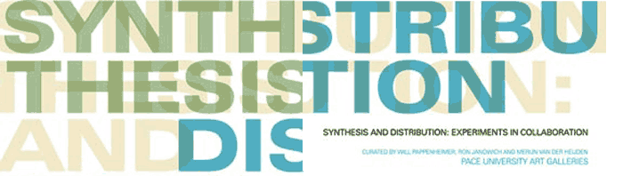

|
| |

JULIE
ANDREYEV AND FOUR WHEEL DRIFT
Four-Wheel
Drift (remix) examines urban culture through the use of a car as an
interactive, experimental VJ/DJ platform. During the remix installation/performance,
audio-visions of the city are repositioned into the public sphere of the
gallery; that which is private--the space of the car--becomes public and
a tool for commentary about the city. In preparation for the installation,
a car equipped with audio/video recording technologies, sensors and interactive
software cruises the city, analyzing data and recording samples. Sounds
from different areas in the car are recorded for use in generating the
remix and manipulated video of views from the car is created and archived
to provide visual storytelling of the city’s street culture.
In FWD (remix), the car is a self-contained creative recording and playback
device. During the performance, the video is projected from the car installed
in the space onto projection walls and the new audio remix is played back
via the car’s speakers. The car can be seen to be ‘recalling’
and ‘narrating’ the experience of driving in the city. The
remix is set-up to play live, continuously generating new combinations
for the duration of the exhibition.
Four-Wheel Drift quotes a racing strategy that causes a controlled, sideways
slide while accelerating forward. Drifting is now a popular sub-culture;
its roots in the illegal auto-sport originating in Japan where drivers
would drift along curved mountain roads. Drifting competitions or ‘battle
drifts’ are judged events that examine the performer’s speed,
angle and style.
FWD (remix) is site-specific in that it relies on the unique urban qualities
of the host city. Influenced by the Situationists International, (1957
- 1972), the project employs the tactic of the ‘derive’ (literally
‘drift’) to cruise the city seeking out urban performance.
LYNN
CAZABON AND HASAN ELAHI
Marseille/Baltimore
is a multi-media, bi-lingual installation consisting of video portraits
of people of these two post-industrial port cities. Between 2003-04, approximately
fifty residents of these cities were asked to speak about the most significant
technological device in their lives at that moment. The objects chosen
are often predictable (cell phone, laptop), sometimes surprising (metro
pass, highlighter pen), but invariably provide insight into the ways in
which everyday technological items become entangled in our lives. Each
interview represents a portrait of that person via the complex connection
to their chosen object. The color of the installation is designed to evoke
both sky and water, referencing the fact that both Marseille and Baltimore
are port cities. The overall audio experience as one first enters the
space is a murmuring of voices, as if one is entering a crowded party.
However, once the viewer decides to commit and sit down at one of the
viewing stations scattered within the gallery, they can experience what
is more like a one-on-one conversation.
MICHAEL
MANDIBERG AND JULIIA STEINMETZ
IN Network
is an extended cell phone life-art performance about distance, communication,
intimacy, telepresence, and living together while apart. In August 2004
artist Michael Mandiberg moved to New York; Julia Steinmetz remained in
Los Angeles, postponing her move for a year because of commitments to
her job and her collaborative art practice. Faced with a year apart, and
the prospect of a long-distance relationship, the two artists got their
frequent flyer numbers handy, and switched both of their cell phones to
a provider with free “IN Network” service.
Michael and Julia started out having normal conversations, giving each
other updates about their days, and sending cameraphone pictures back
and forth, etc. As they switched to using hands-free microphones, they
began using the phone differently. They started doing things together
at the same time, 3000 miles away, via cellular connection: driving to/from
work, eating dinner, giving lectures to students, going for a walk, having
a cocktail, reading books in silence, falling asleep and waking up.
What began as a pragmatic attempt to make their relationship last the
year of separation through good communication, turned into something less
about communication and more about intimacy through (misuse of) technology,
and sharing (sonic-virtual) space.
JOHN MILLER AND TAKUJI KOGO
Life
Sucks: 17 Personal Ads From the Yamaguchi Region
Our collaboration began gradually and casually. Takuji routinely collaborates
with other artists. He also organizes shows and web projects as well.
In 1998, he invited me to show digital projections of game show sets at
his project space in Yokohama, Candy Factory. For these, I used a video
grabber to take scenes from The Price is Right off TV. Then, I removed
all the figures from the set with Photoshop. Takuji responded to this
work with a series he called Non-Broadcasting Time. Here, he photographed
sets for Japanese game shows from oblique angles, emphasizing the façade-like
nature of the set. Then, using Macromedia’s Flash, he would squeeze
the images horizontally or vertically to produce the allusion of a camera
tilt or pan. This created a tension between the flatness of the image
and the space it suggested.
Takuji and I have never discussed long-range goals for our collaborations.
Rather, we work on the basis of a tacit understanding. I suppose we are
both interested in the way people and institutions misrepresent themselves
to themselves. We both know, however, that no representation is transparent.
Rather, it is the façade-like nature of representation that interests
us.
JILLIAN
MCDONALD, KELTY MCKINNON AND BECKLEY ROBERTS
Ivy League,
a hypertext project from 2002, is a collaboration between Jillian Mcdonald,
a Canadian visual artist based in Brooklyn, and Kelty McKinnon, a landscape
designer based in Vancouver, BC. Hedera helix (English Ivy) has simultaneously
been glorified for its abilities to rapidly anchor erosive soils and filter
polluted air, and vilified as an invasive plant, which can rapidly dominate
native ecosystems, out-competing other plants for nutrients, sunlight
and air. The project documents ivy research and encourages visitors to
wander the city streets, scattering seed as they walk. Ivy
League, the public art performance, by Jillian Mcdonald and Beckley
Roberts in 2005, involved two performers who took opposing roles of anti-ivy
activist and gardener / ivy lover. They invited passersby in a public
mini-park to enter their garden and engage in dialogue.
On collaboration: “As a landscape architect, my approach to the
creative process is first and foremost site and research based. Much of
my work explores the possibilities of art and design as a catalyst for
interaction and memory by emphasizing the physical interface with social,
ecological, cultural and geomorphological history. My field tends to be
spatial, focusing not on objects, but on the relationships between things.
Perhaps because of this, collaboration has been an intrinsic part of site-based
work. The dialogue formed with governmental agencies, community members,
engineers, and architects necessitates a simultaneous letting-go and a
corresponding active engagement that, with all parties focused on the
project, often results in something much greater than the original intention.
Ivy League was developed through a similar double take of ‘letting
go’ and ‘grasping-on’ that pushed us into new territory.
For me, pushing the process outside the boundaries of professional or
academic practice allowed the work to become playful and humorous, while
maintaining a seriousness of intention.” ~Kelty McKinnon
SAL
RANDOLPH AND GLOWLAB
The Listen Now project
is an ongoing series of environmental recordings. They invite a displacement
in the act of listening, from one person to another, one time and place
to another. Listening always takes place in the present but sounds are
also tied to the moment of their making. By now we take the displacements
of sound recordings for granted, but there is still something uncanny
about them. A sound environment is an unrepeatable composition, continuously
unfolding whether we give it our attention or not.
For the “Adjacent” series, I’m focusing on streets outside
of where my friends live and work. Beginning at my own front door, and
spiraling outward, I’ll be gathering recordings of street sounds
throughout May and June. Each site will be marked by a Listen Now sticker,
with a number that links to the recording from that site.
New recordings will be added weekly to the site throughout May and June
2005. Listeners are invited to carry the sounds back into public space
and listen to them either adjacent to where they were made (a displacement
in time) or outside the living and working spaces of their own friends
(a displacement of space and social network).
GLOWLAB is a Brooklyn-based community exploring psychogeography as it
relates to con-temporary art. They publish a bi-monthly web-based magazine
and produce events, lectures, projects and exhibitions.
Psychogeography includes just about anything that takes pedestrians off
their predictable paths and jolts them into a new awareness of the urban
landscape. In 2004 Joseph Hart wrote that “psychogeography”
was “a slightly stuffy term that’s been applied to a whole
toy box full of playful, inventive strategies for exploring cities.